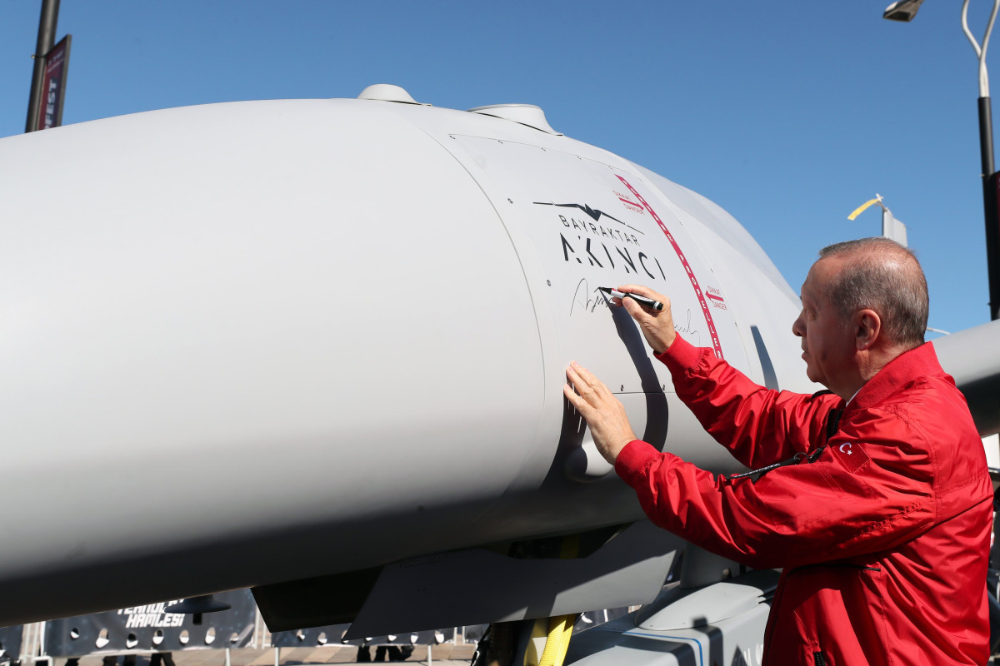

Ərdoğan: “Azərbaycan bizə bir “AKINCI” məsafəsində yaxındır”

Artıq bizə bir “AKINCI” məsafəsində yaxın olan Can Azərbaycanda “TEKNOFEST” nəsli gənclərimizin “İki dövlət, Tək millət, Bir Festival” ruhu ilə qucaqlaşmalarının şahidi olduq.
APA-nın İstanbul müxbiri xəbər verir ki, bu barədə Türkiyə Prezidenti Rəcəb Tayyib Ərdoğan bildirib.